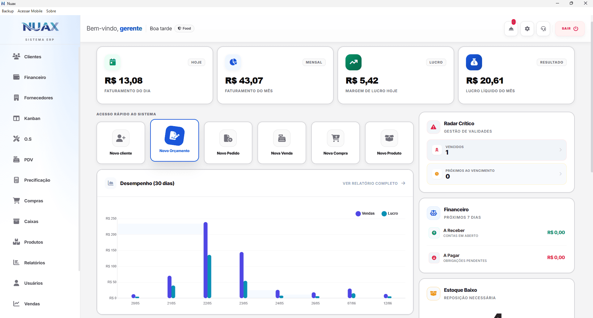
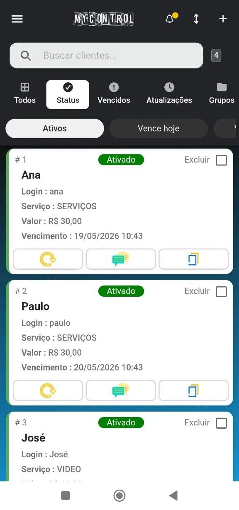

Dois produtos.
Um único objetivo.
Cada produto NUAX resolve uma parte diferente da rotina da sua empresa — e os dois podem operar juntos ou separados.

Nuax ERP
Sistema de gestão 100% offline para Windows. PDV, Estoque, Financeiro, Orçamentos, Ordens de Serviço, Kanban, Mesas e KDS — sem depender de internet ou servidor externo. A partir de R$49,90/mês, com 30 dias de teste grátis.
Conhecer o Nuax ERP
Nuax CRM
Gestão de clientes, cobranças automatizadas via WhatsApp, notificações inteligentes e painel financeiro — em um só app, sincronizado entre dispositivos. Ideal para provedores, técnicos e prestadores de serviço.
Conhecer o Nuax CRMFeito por quem entende
a rotina de uma empresa pequena.
A NUAX nasceu para resolver problemas reais de quem administra um negócio no dia a dia — sem depender de contratos longos, mensalidades escondidas ou sistemas complicados demais para o time usar.
Nossa missão: entregar tecnologia de grande empresa, com a simplicidade e o preço que uma pequena empresa merece.
Software Brasileiro
Desenvolvido no Brasil, para a realidade de quem empreende no Brasil — suporte em português e preços em reais.
Foco em Pequenas e Médias Empresas
Cada produto é pensado para quem precisa de resultado rápido, sem exigir um time de TI para operar.
Seus Dados, Sua Segurança
Do banco de dados criptografado do Nuax ERP à autenticação por biometria do Nuax CRM — segurança em primeiro lugar nos dois produtos.
Qual produto
você precisa hoje?
Se você precisa de gestão completa da operação, comece pelo Nuax ERP. Se o foco é organizar clientes e cobranças, o Nuax CRM é o caminho.